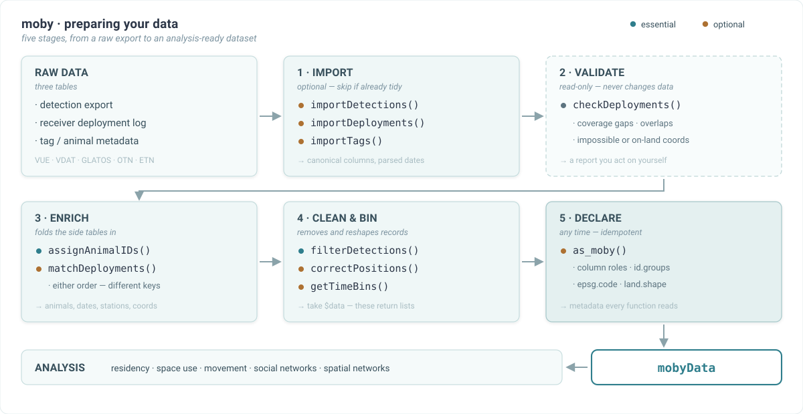

The moby pipeline: from a raw export to an analysis-ready dataset
Source:R/moby-pipeline.R
moby_pipeline.Rdmoby's preparation functions look numerous, but they fill only five roles. Learn the
roles and the running order stops being something to memorise. Two things are true throughout, and
both simplify the picture:
Every function also accepts an ordinary data frame. A
mobyDatais a convenience that saves you repeating arguments - never a gate you must pass through.Only the enrich and clean roles change your data. The audit role cannot.

The five roles
- 1. Read -
importDetections,importTags,importDeployments Turn a vendor export into moby's canonical columns: renames columns, parses date-times, coerces coordinates. Each returns a plain data frame. Optional - skip them if your table already uses
ID/datetime/station/lon/latwith a POSIXct datetime. Seemoby_import_schemafor every field.- 2. Audit -
checkDeployments Validates the receiver log (coverage gaps, overlapping deployments, duplicate stations, invalid dates, implausible or on-land coordinates, short monitoring effort) and cross-checks detections against it. Returns a report and modifies nothing. Recommended.
- 3. Enrich -
matchTags,matchDeployments Fold a side table into the detections.
matchTags()resolves transmitter codes to animals;matchDeployments()matches detections to deployment windows and back-fills station names and coordinates. They key on different columns (transmitter vs receiver) and are order-independent. Both change rows and columns only: neither attaches study metadata, and both return the same class they were given.- 4. Clean & bin -
filterDetections,correctPositions,getTimeBins Where the data actually becomes analysis-ready: removing spurious detections, relocating positions that fall on land, and assigning regular time bins.
- 5. Declare -
as_moby The package's only constructor, and the one place study metadata enters a dataset: which column plays which role, plus
id.groups,epsg.code,land.shape, and - viatags- each animal's tagging date and nominal delay. Idempotent, so call it whenever you want to add metadata without losing what is already attached.
A typical run
# 1 - read
det <- importDetections(det_file, source = "vue")
tags <- importTags(tag_file, source = "vue")
# 2 - enrich: animal identity (rows and columns only; nothing is attached)
det <- matchTags(det, tags)
det <- det[!is.na(det$ID), ] # drop transmitters absent from 'tags'
det$ID <- droplevels(det$ID)
# 3 - clean: note this returns a REPORT, not a data frame
qc <- filterDetections(det, max.speed = 2, speed.unit = "m/s")
qc # what was removed, and why
det <- qc$data
# 4 - bin, and declare: tagging dates and nominal delays come from 'tags', the rest from you
det$timebin <- getTimeBins(det$datetime, interval = "30 mins")
dataset <- as_moby(det, tags = tags, id.groups = groups, epsg.code = 32629)Add the receiver-log branch when you need it - audit, then match:
deployments <- importDeployments(log_file, source = "vue")
checkDeployments(deployments, detections = det) # report only; fix what it flags
det <- matchDeployments(det, deployments)Already hold a tidy data frame? No moby object is required at any point:
qc <- filterDetections(df, tagging.dates = tagging_dates, max.speed = 2)What happens if you skip a step
| function | status | skip it and... |
importDetections() | optional | nothing breaks; supply canonical columns yourself |
importTags() | optional | nothing breaks; you must supply tagging dates another way |
importDeployments() | optional | nothing breaks; only needed if you use the receiver log |
checkDeployments() | recommended | nothing breaks; you may match against a log with real errors |
matchDeployments() | optional | coordinates stay as exported, unvalidated and ungapfilled |
matchTags() | recommended | IDs stay as exported transmitter codes |
filterDetections() | essential | false detections, pre-tagging records and impossible speeds stay in |
correctPositions() | optional | nothing breaks unless coordinates sit on land |
getTimeBins() | recommended | no per-bin analyses (COAs, wide tables, chronograms) |
as_moby() | essential in practice | filterDetections() errors without tagging dates; no id.groups, projected CRS or land-aware distances |
Ordering rules (there are only two)
Audit before you delete.
checkDeploymentsis read-only and idempotent, so it has no single correct slot - run it early to find problems, and again after corrections to confirm they landed. The one position that matters: run it beforematchDeployments(drop.unmatched = TRUE), which removes the records that four of its five detection-side checks rely on. Under the default (FALSE) nothing is lost and order is free.Declare before you filter.
filterDetectionsneeds tagging dates, which reach the dataset throughas_moby(det, tags = tags)(or its owntagging.datesargument). The two enrich steps themselves may run in either order.
Three easy traps
filterDetectionsandcorrectPositionsreturn lists, not data frames - take$data. Writingdet <- filterDetections(det)leaves you holding amobyFilterobject and the next call fails.getTimeBinsreturns a vector; assign it to a column yourself.matchTagsleavesNAIDs (with a warning) for transmitters that are not in your tag table - typically other projects' tags. Remove them, or they travel into the analysis.
See also
moby_import_schema for the canonical column names; as_moby for the
data model; the package vignettes for worked examples.